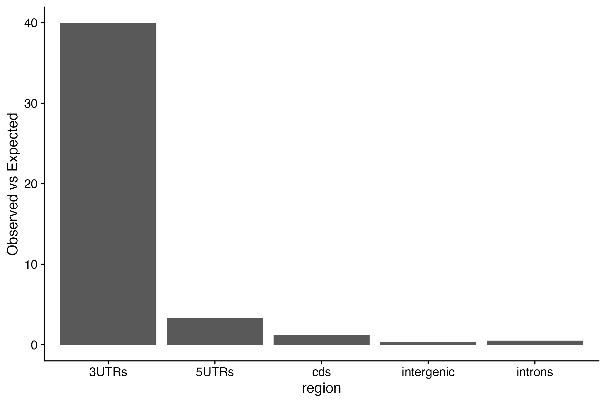

Welcome to Bioconductor
Vignettes contain introductory material; view with
'browseVignettes()'. To cite Bioconductor, see
'citation("Biobase")', and for packages 'citation("pkgname")'.
Attaching package: 'scales'
The following object is masked from 'package:purrr':
discard
The following object is masked from 'package:readr':
col_factor
Exercises: 1. Identify the transcript regions most enriched for binding by the RBP ZFP36. 2. Within that preferentially bound region, identify which 5mers ZFP36 most likes to bind to.
We are looking for an ZFP36 PAR-CLIP corresponding to this SRA (short-read archive) ID: SRR1046759
1. Determine the annotation region most enriched for ZFP36 binding sites.
To do so you will need to annotate the ZFP36 binding sites and a randomized set of binding sites (based on ZFP36 binding sites) to determine the which binding region is preferred by ZFP36 binding.
1a. Build annotation database
# What annotation categories are available?possible_annotations<-builtin_annotations()# Keep only those containing "hg19"hg19_annots<-grep("hg19_genes", possible_annotations, value =T)# let's keep 5' utr, cds, intron, 3' utr and intergenicmy_hg19_annots<-hg19_annots[c(3,4,7,10,11)]# build the annotation databaseannotations<-build_annotations(genome ='hg19', annotations =my_hg19_annots)
1b. Annotate the ZFP36 binding sites
# We are importing a bed file directly from github for zfp36 binding siteszfp36_regions <-read_regions(con ="https://raw.githubusercontent.com/BIMSBbioinfo/RCAS_meta-analysis/master/rbp-binding-sites/SRR1046759.clusters.bed",genome ='hg19', format ='bed')# annotate zfp36 binding sites and convert to dfzfp36_annot <-annotate_regions(??) %>%data.frame()# We will keep only columns we need and collapse the redundant infomyInfo <-c("seqnames","start","end","width","strand","annot.symbol","annot.type")zfp36_annot <- zfp36_annot[,??] %>%unique() # Just getting rid of the "hg19_genes_" string to simplify `annot.type`zfp36_annot$annot.type <-gsub("hg19_genes_","",zfp36_annot$annot.type)table(zfp36_annot$annot.type)
1d. Determine which regions exhibit more than expected ZFP36 binding sites.
site_dist <-bind_cols(region=??(??(??$annot.type)),observed=??(??$annot.type),expected=??(??$annot.type) )site_dist$enrichment <- site_dist$observed/site_dist$expectedsite_dist_long <-pivot_longer(site_dist,cols =c(??,??,??))colnames(site_dist_long) <-c("region","type","value")ggplot(?? %>%filter(type=="??"), aes(y = ??, x = ??)) +geom_bar(stat="identity") +ylab("Observed vs Expected") +theme_cowplot()

2. Determine the preferred seqeunces bound by ZFP36.
You have determined which region ZFP36 binding sites are preferred to reside - the 3’ UTR :).
Focusing on 3’ UTR binding sites, determine which sequences ZFP36 binds to compared to background sequences for that region USING 5mers.
Remember the workflow for determine k-mer composition (USING 5mers) for any set of intervals (binding sites or annotation categories).
Create a Granges object for a given annotation category.
Remove duplicated intervals (from diff transcript ids) with reduce.
Retrieve seqeunces using getSeqs
Create a dataframe containing the count and frequency of each 5mer.
2a. Calculate 5mers in ZFP36 binding sites in 3’ UTRs.
# create a Grange for zfp36 3' UTR sites zfp36_3utr <-makeGRangesFromDataFrame(df = ?? %>%filter(annot.type=="??"), ignore.strand = F, seqnames.field ="seqnames", start.field ="start", end.field ="end", strand.field ="strand", keep.extra.columns = T)# get sequencees for those coordinateszfp36_3utr_seqs <-getSeq(??, ??)# count all 5mer instances per sequence, add all instances, and turn into a dataframe with column name countszfp36_3utr_5mer <- ??(x = ??,width = ??,as.prob = F,simplify.as="matrix") %>%colSums(.) %>%as.data.frame()colnames(zfp36_3utr_5mer) <-"zfp36_utr_count"zfp36_3utr_5mer$zfp36_utr_freq <- zfp36_3utr_5mer$zfp36_utr_count/sum(zfp36_3utr_5mer$zfp36_utr_count)
2b. Calculate 5mers in 3’ UTRs.
# create a Grange for 3' UTRs threeUTR <- GenomicRanges::reduce(annotations[annotations$type %in% my_hg19_annots[??]])# get sequencees for those coordinatesthreeUTR_seqs <-getSeq(??, ??)# count all 5mer instances per sequence, add all instances, and turn into a dataframe with column name countsutr3_5mer <-oligonucleotideFrequency(x = ??,width = ??,as.prob = F,simplify.as="matrix") %>%colSums(.) %>%as.data.frame()colnames(utr3_5mer) <-"utr_count"utr3_5mer$utr_freq <- utr3_5mer$utr_count/sum(utr3_5mer$utr_count)
2c. Compare 5mer frequencies in ZFP36 binding sites vs background.
Label 5mers that are 8x, remember log2(8) = 3, enriched above background.
# check if rownames are identical and stop if they are notstopifnot(identical(rownames(zfp36_3utr_5mer),rownames(utr3_5mer)))utr3_df <-bind_cols(??,??)utr3_df$zfp36_enrich <- utr3_df$zfp36_utr_freq/utr3_df$utr_freq# scatter plotggplot(data = ??,aes(y = ??, x = ??)) +geom_point(color =ifelse(utr3_df$?? >8, "red", "black")) +ylab("ZFP36 3'UTR") +xlab("3'UTR") +geom_abline(intercept =0, slope =1) +geom_text_repel(aes(label=ifelse(?? >8,rownames(utr3_df),""))) +theme_cowplot() # print top 10 with gt?? %>%rownames_to_column(var ="5mer") %>%arrange(-??) %>%top_n(n =10) %>%gt()